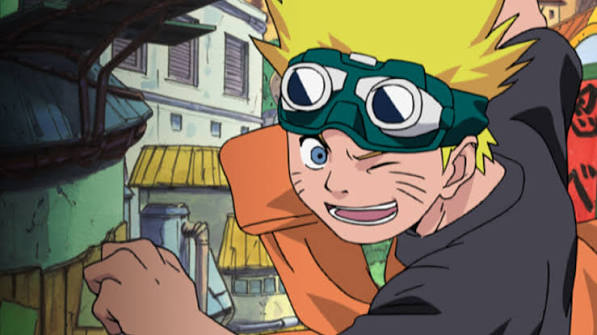

Naruto Uzumaki es un personaje ficticio y el protagonista de la serie de manga y anime "Naruto", creada por Masashi Kishimoto. Es un joven ninja del pueblo oculto de Konoha, conocido por su personalidad enérgica, su determinación y su sueño de convertirse en Hokage, el líder de su aldea. Naruto es huérfano desde su nacimiento y lleva dentro de sí al zorro demonio de nueve colas, Kurama, lo que le otorga habilidades especiales pero también lo hace objeto de discriminación por parte de los demás habitantes del pueblo.